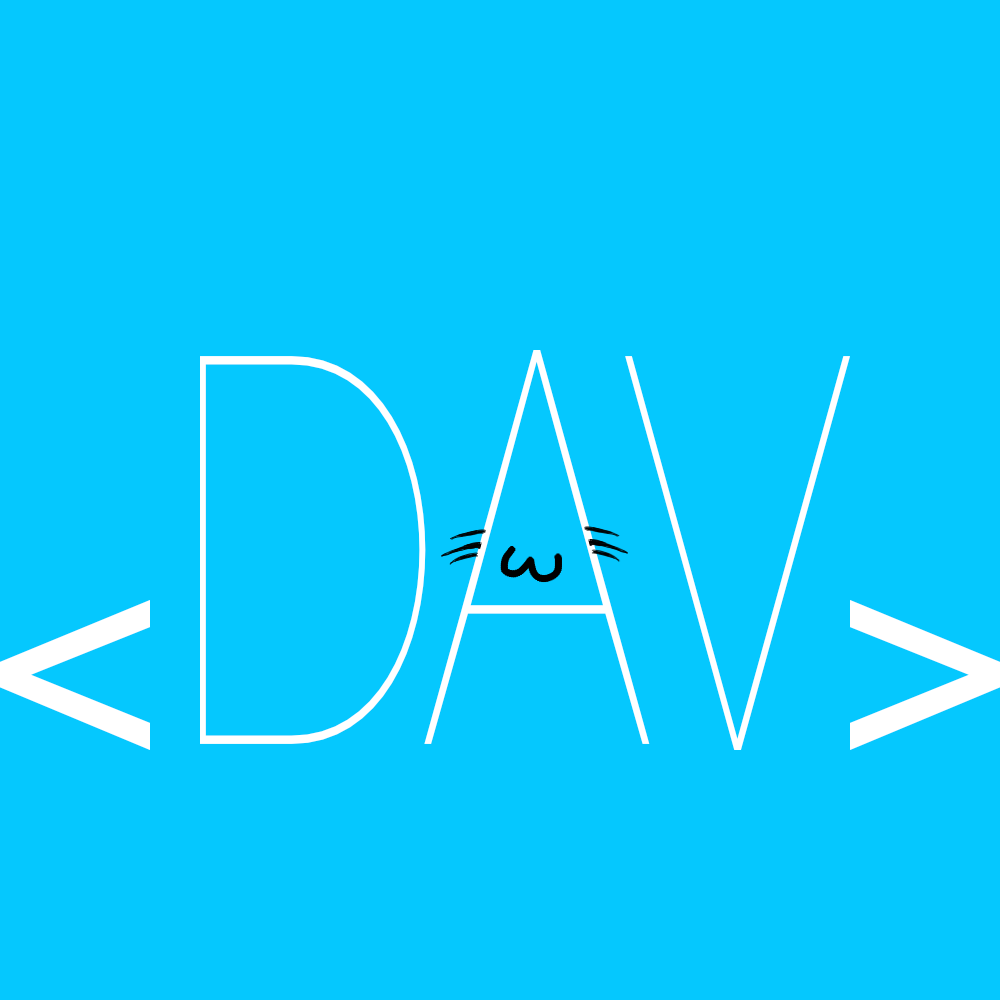
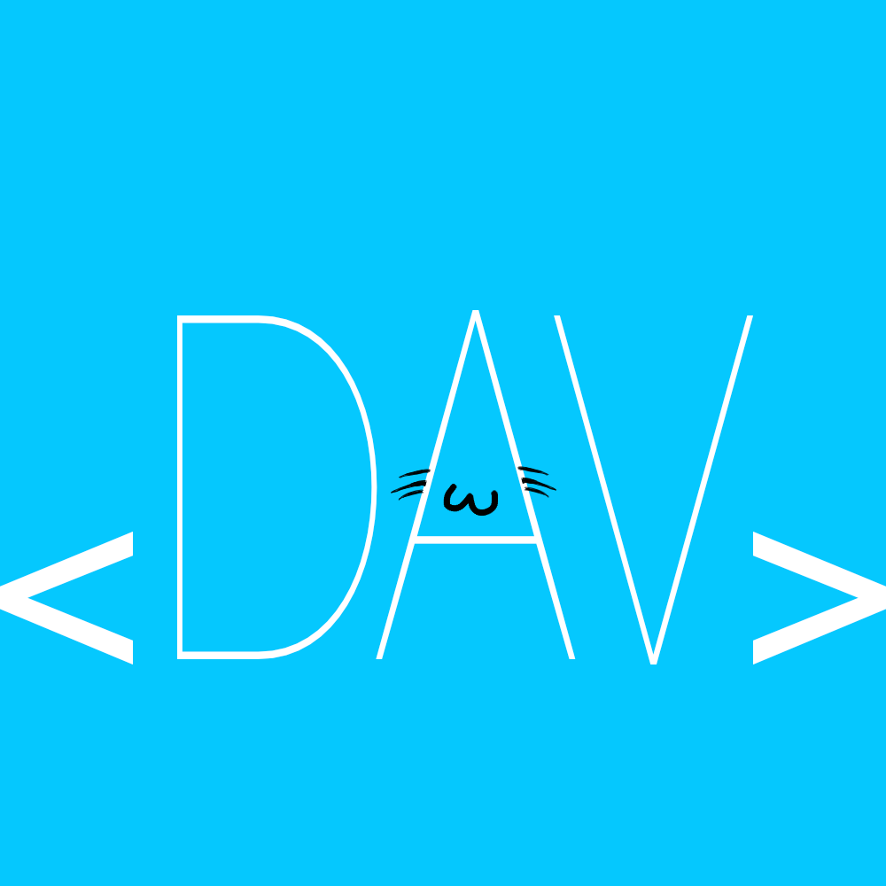

hellogika
Hello! I'm Gika (Pun intended)
I don't have anything just yet.
But I want to create Operating Systems and more.
My primary goal is to make stuff that can help other developers.
But with Viper, I usually just make small games, and visual novels.
Thanks for coming to my TED talk.
(The buttons below link to my socials.)
 


---------------
Projects
My main project I want to focus on currently is Juni.
Juni was a name that I really liked, and frankly enough it could go well with many things:
but it was mainly wanting to be a database platform for developers around,
but later being discounted with no funding nor idea of how to start it.
The upcoming year that is going to change due to Juni coming to a brand new start,
with the future not knowing if it’s gonna be a Linux distribution or it’s own operating system,
it won’t lose its promise of helping developers make things and succeed.